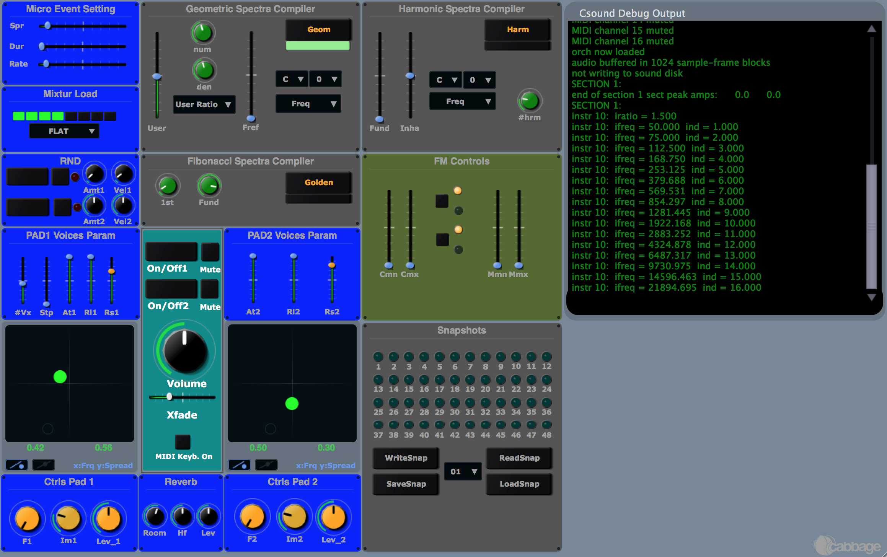

Dal 1982 Eugenio Giordani è stato ricercatore e sviluppatore di progetti per sistemi musicali elettronici digitali.
Dal 1982 al 1989 fu consulente all'ISELQUI (Istituto Elettronico per la Qualità Industriale) di Ancona, ora trasformato
in un'azienda di servizi privata (Iselqui Technology). Nel 1989, in collaborazione con gli ingegneri elettronici
Sandro Gabrielli e Stefano Bondi, fonda lo Studio Associato di Progettazioni Elettroniche, noto come Laboratorio di
Ricerca Avanzata per Intercontinental Electronics (Viscount Electronic Organs e Oberheim). Dal 1996 svolgeva attività
di consulenza scientifico-musicale per VISCOUNT Organ. Durante il periodo di collaborazione con l’Iselqui partecipò allo
sviluppo di vari sistemi di generazione digitale del suono. Per Viscount (e per alcuni anni in joint venture con Oberheim)
realizzò l'algoritmica di sintesi e lo sviluppo fonico di 3 progetti di pianoforte digitale, l'ultimo dei quali utilizza
una sua originale tecnica di sintesi appositamente progettata e presentata commercialmente con il nome
iMotion TM,
diversi processori EFX e un Vintage Organ (DB Series).
Per diversi anni (dal '94 al '99) si occupò dello sviluppo di algoritmi per la riverberazione che presto trovano applicazione in
una serie di prodotti Viscount. Durante lo stesso periodo, contribuisce all'implementazione di un modulo di riverbero (EuVERB) adottato
nella libreria base del sistema Kyma-Capybara.
Symbolic Sound Kyma: Products SoundAlgorithms
... People especially seem to like the one called EuVerb that was
designed by one of our customers, Eugenio Giordani, using basic
elements found in Kyma. ...
Physis Piano
Eugenio Giordani partecipò in qualità di sound designer a questo enorme progetto nel quale confluivano idee, competenze e passione
di molti ingegneri, fisici e musicisti. La sfida era quella di realizzare uno strumento a modellazione fisica per la sintesi diretta
dei suoni di pianoforte, impegno che lo portò a vivere questa entusiasmante esperienza con tante persone di grande talento e
dedizione per circa sette anni.
Stria
"Stria" è un progetto che nasce come esempio didattico attraverso il software di generazione/elaborazione Csound5. Il primo
progetto risale al 2004 con il nome AFMX31
Grazie al lavoro di Alessandro Petrolati (apeSOFT http://www.densitygs.com/)
è stato utilizzato il codice originale Csound
per realizzare un'applicazione completa dedicata ad iPhone e iPad e disponibile nel sito di iTunes. Il nome "Stria" è il
titolo di una composizione molto famosa di John Chowning a cui tale lavoro è dedicato.
Since 1982 Eugenio Giordani has been a researcher and project developer for digital electronic music systems. From 1982 to 1989
he was a consultant at ISELQUI (Electronic Institute for Industrial Quality) in Ancona, now transformed into a private service
company (Iselqui Technology). In 1989, in collaboration with electronic engineers Sandro Gabrielli and Stefano Bondi,
he founded the Associated Electronic Design Studio, known as the Advanced Research Laboratory for Intercontinental Electronics
(Viscount Electronic Organs and Oberheim). Since 1996 he had been doing scientific-musical consulting work for VISCOUNT Organ.
During his time with ISELQUI he participated in the development of various digital sound generation systems. For Viscount
(and for a few years in a joint venture with Oberheim) he carried out the synthesis algorithmics and phonic development of
3 digital piano projects, the last of which uses his own original synthesis technique specially designed and commercially presented
under the name iMotion TM,
several EFX processors and a Vintage Organ (DB Series).
For several years (from '94 to '99) he worked on the development of reverberation algorithms that soon found application in a
number of Viscount products. During the same period, he contributed to the implementation of a reverberation module (EuVERB)
adopted in the base library of the Kyma-Capybara system.
Symbolic Sound Kyma: Products SoundAlgorithms
... People especially seem to like the one called EuVerb that was
designed by one of our customers, Eugenio Giordani, using basic
elements found in Kyma. ...
Physis Piano
Eugenio Giordani participated as sound designer in this huge project in which the ideas, skills and passion of many engineers,
physicists and musicians converged. The challenge was to make a physically modeled instrument for the direct synthesis of piano sounds,
an endeavor that took him through this exciting experience with many talented and dedicated people for about seven years.
Stria
“Stria” is a project that originated as a teaching example through Csound5 generation/processing software. The first project
dates back to 2004 under the name AFMX31.
Thanks to the work of Alessandro Petrolati (apeSOFT http://www.densitygs.com/)
the original Csound code was used to make a
complete application dedicated to iPhone and iPad and available on the iTunes site. The name “Stria” is the title of a very
famous composition by John Chowning to whom this work is dedicated.
AFMX31 (2004)

STRIA (2008)
Designed for iPad 2 and iPhone 4GS (or later), it will work also on
iPod Touch 4G and old devices (iPad 1 and iPhone 3) but with
potentially slower performance due to the heavy requirements of
the audio processing. You need to setting the audio buffer size
1024 and Sampling Rate 22050 (In the app Settings).
Multilevel Interactive Sound Synthesizer
Idea and Csound-Orchestra by Eugenio Giordani
“Stria” is the title of a very important composition by John
Chowning and I would like to say that this computer music piece
represents the manifest of Frequency Modulation technique
applied to audio synthesis, invented by Mr. Chowning himself.
Stria è stata implementata anche in forma di plugin
VST attraverso il software Cabbage
STRIA_VST
